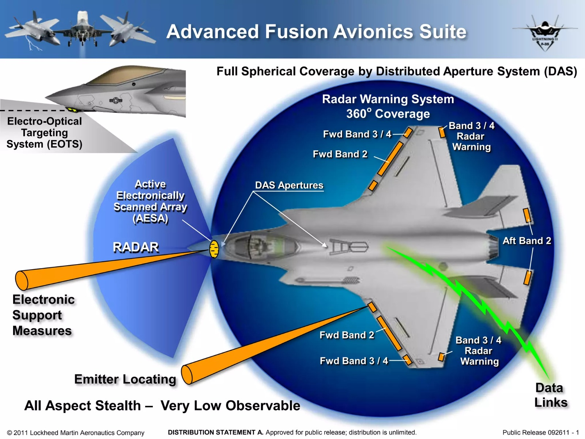

Sensor Fusion ist ein Überbegriff für alle Systeme, die Informationen aus verschiedenen Quellen kombinieren und verwerten. Diese Quellen variieren stark und können zum Beispiel Radar-, Infrarot- oder elektromagnetischer Natur sein.
Bei der Sensorfusion geht es jedoch nicht darum, einfach mehrere Sensoren und Informationsquellen zu besitzen, sondern darum, diese Intelligent (oft mit KI) zu kombinieren und für andere Systeme oder Menschen lesbar zu machen. Dies hat den Zweck in kritischen Situationen Entscheidungen einfacher und schneller zu treffen. Viele moderne Kriegs-Systeme wie zum Beispiel Flugzeuge, auf denen hier der Fokus liegt, brauchen zwingend Sensor-Fusion, da die Menge und Komplexität der Systeme ohne Fusion absolut unbezwingbar wären. Sensor Fusion ist also ein Zusatzfeature für moderne Kriegssysteme, hat sich aber in der Zwischenzeit als zwingendes Bestandteil moderner Kriegsführung etabliert. Ein weiterer Bestandteil von Sensor Fusion sind Datalinks. Diese bezeichnen den Datentransfer zwischen Einheiten, während Sensor Fusion meist Datenfusion innerhalb einer Einheit beschreibt. Heutzutage sind aber meistens beide kombiniert und unter Sensor Fusion bekannt.
Moderne Sensor Fusion geht jedoch auch über das einfache Verwerten von Informationen hinaus. Einfache Systeme waren schon in den 70er Jahren vorhanden und haben hauptsächlich Informationen innerhalb eines Systems sortiert und arrangiert. Heutige Systeme jedoch machen weit mehr aus den Informationen. Sie werden zusätzlich analysiert, gefiltert, verbessert, kombiniert und geteilt, auch mit anderen Einheiten. So können Flugzeuge, die mit NATO Link16 ausgestattet sind, Informationen vollständig automatisiert teilen und verwerten. Angenommen, eine E-3 AWACS (Fliegende Radarstation) erfasst ein Ziel. Dieses Flugzeug besitzt selber jedoch keine Waffen. Mit dem Link16 kann es die Zieldaten an eine F-35 in der Nähe schicken, die dann das Ziel zwar nicht selber erfasst, aber trotzdem eine Aim-120D (Air to Air Missile) abfeuern kann. Diese bekommt dann ihre Micourse Zieldaten von der E-3, obwohl die F-35 sie abgefeuert hat. Sagen wir jetzt aber die E-3 kann die Aim-120D nicht bis zum Ziel lenken, da es im Zielgebiet zu gefährlich für eine unbewaffnete Maschine ist. In diesem Fall kann eine F-22, die bisher überhaupt nicht beteiligt war, bei der Aktion teilnehmen. Wegen der Tarnkappen Eigenschaften der F-22 hat sie keine Probleme im Zielgebiet. Letztendlich wird die Aim-120D die letzten etwa 25 Kilometer vom eigenen internen Radar gelenkt und erfüllt die Mission. All das ist nur möglich, weil ALLE beteiligten Flugzeuge NATO Link16 besitzen. Natürlich haben China, Russland und andere Länder eigene Systeme entwickelt, aber NATO Link16 ist am weitesten verbreitet.
Besonders bei unbemannten oder "intelligenten" Systemen werden solche Systeme immer wichtiger, da diese entweder ohne Menschen operieren oder wegen ihrer Funktionsweise einfach sehr viele Daten brauchen und diese nur durch Sensorfusion erhalten können. Auch die wachsenden Zahlen an Stealth Flugzeugen erfordern Sensor Fusion, da diese mit nur einem alleinstehenden Sensor schwer zu erfassen sind.
Das vorherige Beispiel ist nur eines von vielen Einsatzgebieten von Datalinks und Sensorfusion.
Ein weiterer, tatsächlich von der US Navy vorgestellter Einsatz von Sensor Fusion ist folgender: Die USN operiert im Moment 2 Flugzeugtypen von ihren Flugzeugträgern aus. Die F/A-18E/F, ein schwerer, nicht getarnter Flieger der 4ten Generation und die F-35C, ein leichter, getarnter Flieger der 5ten Generation. Ausserdem nutzt die USN die Aim-174B, eine Extrem-Langstrecken- Rakete. Diese hat eine Reichweite von über 350 km. Sie ist so gross, dass sie nur von der schweren F/A-18 getragen werden kann. Jedoch besitzt dieses Flugzeug ein zu schwaches Radar, um 350km Reichweite zu haben. Also was tut man? Man sendet eine F-35 näher zum Ziel, die wegen ihrer Tarnkappen Eigenschaften unentdeckt bleibt. Dann sendet die F-35 die Zieldaten zur F/A-18 zurück, die dann die Aim-174B abfeuert. Die F-35 übernimmt darauf die Kontrolle über die Aim-174B und lenkt sie ins Ziel. So nutzt man die Tragekapazität der F/A-18 zusammen mit den Modernen Systemen der F-35. Diese Mission wurde von der Navy exakt beschrieben und angeblich auch erprobt.
Dies beschreibt jedoch eher Einsatzgebiete und nicht die tatsächlichen Systeme. Mit diesen befassen wir uns jetzt:
Das vermutlich modernste System ist das der F-35A/B/C. Während die meisten modernen westlichen Flugzeuge die Standard Sensoren besitzen (Radar IRST Link16) und diese dann nachträglich fusionieren, ist die gesamte F-35 eigentlich ein vorfusioniertes Datensystem. Das Herzstück ist das MADL (Multifunction Advanced Datalink) - im Prinzip Link16 aber besser. Damit verbunden sind andere Fusionssysteme wie das AAQ-37 DAS, auch genannt das "Distributed Aperture System", das mehrere Kameras verbindet, um ein fusioniertes Bild der Umgebung zu erzeugen. Es erlaubt dem Piloten sogar, mit seinem Helm durch das Flugzeug zu schauen. Andere Bestandteile des Systems sind das AAQ-40 EOTS, ein Multispektrales Electro Optical Targeting System, das jegliche Waffen lenken kann, und das APG-81 Radar sowie das ASQ-239 Elektronische Kriegsführungssystem. All das macht die F-35 zum technologisch mit Abstand besten Flugzeug mit der besten Sensor-Fusion.
Zugegeben haben fast alle modernen Flugzeuge Sensor Fusion, wenn auch nicht so gute wie der F-35. Eurofighter Typhoon, Dassault Rafale, Gripen E, F-22, F/A-18, Su-57, Su-35 und Mig-35 haben alle moderne und kompetente Systeme. Man muss auch immer bedenken, dass Sensor Fusion auch Nachteile hat. Insbesondere die Komplexität, die hohen Kosten und die "Überintegration". Überintegration bedeutet in diesem Fall, das Data Fusion erfordert, dass alle Systeme komplett vernetzt sind und nicht ohne einander auskommen. So kann ein Ausfall eines Systems den Ausfall aller Systeme bedeuten. Natürlich werden diese Probleme mitigiert, trotzdem KÖNNTE man den Ansatz der F-35, mehr auf Technologie und Integration zu setzen, anstatt auf Performance und Power, als schlecht ansehen. Es entsteht dasselbe Problem wie beim Killchain Prinzip.